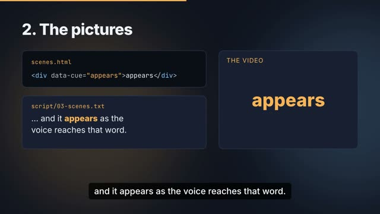

<style>
  /* Layout only: colour, type and motion come from the launch theme. Title emphasis is
     always cyan; pink means cost or warning, lime means gain or a pass. */
  h2 { position: absolute; top: var(--heading-top); left: var(--pad); font-family: var(--font-display); font-size: var(--heading-size); font-weight: var(--display-weight); letter-spacing: var(--display-tracking); }
  h2 em { font-style: normal; color: var(--accent-2); }
  .mono { font-family: var(--font-mono); }
  .card { background: var(--card); border: var(--border) solid var(--line); border-radius: var(--radius); box-shadow: var(--shadow); }
  .who { font-family: var(--font-mono); font-size: 30px; color: var(--accent-2); letter-spacing: 0.03em; }

  /* 01-hook */
  .hook { position: absolute; left: var(--pad); top: 190px; width: 1080px; }
  .hook .l1 { font-family: var(--font-display); font-size: 86px; white-space: nowrap; font-weight: 700; letter-spacing: -0.04em; line-height: 1.02; }
  .hook .l2 { font-family: var(--font-display); font-size: 64px; font-weight: 500; color: var(--muted); margin-top: 18px; }
  .mess { position: absolute; right: 120px; top: 60px; width: 600px; height: 560px; }
  .mess .chip { position: absolute; padding: 18px 26px; font-family: var(--font-mono); font-size: 32px; font-weight: 700; white-space: nowrap; color: var(--ink); }
  .chip.pr { border-color: var(--accent-2); color: var(--accent-2); }
  .chip.bad { border-color: var(--bad); color: var(--bad); }
  .shit { position: absolute; left: var(--pad); top: 560px; font-family: var(--font-display); font-size: 150px; font-weight: 700; letter-spacing: -0.04em; color: var(--accent); }
  .turn { position: absolute; left: 900px; top: 610px; display: flex; align-items: center; gap: 28px; }
  .turn .arrow-svg { width: 120px; height: 50px; }
  .turn .arrow-svg path { fill: none; stroke: var(--accent-2); stroke-width: 6; stroke-linecap: round; stroke-linejoin: round; }
  .turn b { font-family: var(--font-display); font-size: 92px; font-weight: 700; letter-spacing: -0.04em; color: var(--accent-2); }

  /* 02-karpathy */
  .quote { position: absolute; left: var(--pad); top: 150px; width: 1020px; padding: 46px 52px; min-height: 560px; }
  .quote p { font-family: var(--font-display); font-size: 46px; line-height: 1.28; font-weight: 500; margin-top: 24px; }
  .quote .mark { color: var(--accent-3); font-weight: 700; }
  .ladder { position: absolute; right: var(--pad); top: 150px; width: 560px; display: flex; flex-direction: column; gap: 22px; }
  .rung { padding: 24px 30px; font-size: 38px; font-weight: 700; display: flex; justify-content: space-between; align-items: center; }
  .rung small { font-family: var(--font-mono); font-size: 30px; color: var(--muted); font-weight: 400; }
  .rung.top { border-color: var(--accent-3); color: var(--accent-3); box-shadow: 0 0 60px rgba(198, 255, 61, 0.22); }
  .ladder-note { position: absolute; right: var(--pad); top: 700px; width: 560px; font-family: var(--font-mono); font-size: 30px; color: var(--muted); }

  /* 03-how */
  .pipe { position: absolute; left: var(--pad); right: var(--pad); top: 260px; display: flex; align-items: center; justify-content: space-between; }
  .node { width: 330px; height: 250px; padding: 30px; display: flex; flex-direction: column; justify-content: center; gap: 12px; }
  .node b { font-family: var(--font-display); font-size: 42px; font-weight: 700; white-space: nowrap; }
  .node span { font-size: 32px; color: var(--muted); }
  .node.out { border-color: var(--accent-2); padding: 18px; gap: 10px; }
  .node.out img { width: 100%; border-radius: 10px; display: block; }
  .node.out b { color: var(--accent-2); font-size: 36px; }
  .link { width: 80px; height: 40px; }
  .link path { fill: none; stroke: var(--accent-2); stroke-width: 5; stroke-linecap: round; stroke-linejoin: round; }
  .aside { position: absolute; left: var(--pad); top: 590px; width: 1040px; padding: 28px 34px; }
  .aside q { display: block; font-size: 38px; line-height: 1.3; margin-top: 10px; }
  .stamp { position: absolute; right: 190px; top: 600px; padding: 18px 34px; border: 5px solid var(--accent-3); border-radius: 14px; color: var(--accent-3); font-family: var(--font-mono); font-size: 40px; font-weight: 700; transform: rotate(-5deg); text-align: center; line-height: 1.15; }
  .stamp small { display: block; font-size: 30px; font-weight: 400; }

  /* 04-decide */
  .hand { position: absolute; left: var(--pad); top: 250px; display: flex; align-items: center; gap: 22px; }
  .hand .who-chip { padding: 18px 28px; font-family: var(--font-mono); font-size: 32px; font-weight: 700; }
  .hand .arrow-svg { width: 110px; height: 40px; }
  .hand .arrow-svg path { fill: none; stroke: var(--accent-2); stroke-width: 5; stroke-linecap: round; stroke-linejoin: round; }
  .ask { position: absolute; left: var(--pad); top: 360px; font-family: var(--font-display); font-size: 52px; font-weight: 700; }
  .opts { position: absolute; left: var(--pad); top: 460px; width: 1120px; display: flex; gap: 40px; }
  .opt { flex: 1; padding: 30px 40px; }
  .opt h3 { font-family: var(--font-display); font-size: 50px; margin-bottom: 14px; }
  .opt .row { display: flex; align-items: center; gap: 18px; margin-top: 12px; }
  .opt .k { font-family: var(--font-mono); font-size: 32px; color: var(--muted); width: 120px; }
  .bar { height: 30px; border-radius: 15px; }
  .bar.gain { background: var(--accent-3); } .bar.cost { background: var(--accent); }
  .rec { position: absolute; right: 150px; top: 480px; padding: 24px 38px; border: 6px solid var(--accent-3); border-radius: 18px; color: var(--accent-3); font-family: var(--font-display); font-size: 60px; font-weight: 700; transform: rotate(-5deg); text-align: center; line-height: 1.05; }
  .rec small { display: block; font-family: var(--font-mono); font-size: 30px; font-weight: 400; margin-top: 8px; }
  .you { position: absolute; left: var(--pad); top: 760px; font-family: var(--font-display); font-size: 56px; font-weight: 700; }

  /* 05-critics */
  .panel { position: absolute; left: var(--pad); top: 250px; width: 1100px; display: grid; grid-template-columns: repeat(4, 1fr); gap: 18px; }
  .panel .c { padding: 22px 18px; font-size: 32px; font-weight: 700; text-align: center; }
  .catch { position: absolute; left: var(--pad); top: 470px; width: 1100px; padding: 30px 38px; }
  .catch .was { font-size: 38px; margin-top: 14px; }
  .catch .was s { color: var(--bad); text-decoration-thickness: 4px; }
  .catch .now { font-size: 38px; margin-top: 14px; color: var(--accent-3); }
  .meter { position: absolute; right: var(--pad); top: 250px; width: 470px; padding: 32px 34px; }
  .meter .seg { border-radius: 12px; margin-top: 16px; padding: 16px 22px; font-family: var(--font-mono); font-size: 30px; font-weight: 700; line-height: 1.25; }
  .meter .seg span { display: block; font-weight: 400; color: inherit; opacity: 0.9; }
  .seg.lo { background: #2a2050; color: var(--ink); }
  .seg.mid { background: #3b2c70; color: var(--ink); }
  .seg.hi { background: var(--accent-2); color: #08121a; }

  /* 06-yours */
  .swatches { position: absolute; left: var(--pad); top: 270px; display: flex; gap: 30px; }
  .sw { width: 300px; height: 300px; border-radius: var(--radius); padding: 28px; display: flex; flex-direction: column; justify-content: space-between; border: 3px solid transparent; }
  .sw b { font-family: var(--font-mono); font-size: 32px; font-weight: 700; }
  .sw .dots { display: flex; gap: 12px; }
  .sw .dots i { width: 40px; height: 40px; border-radius: 50%; display: block; }
  .sw.ship { background: #0f1420; color: #eef2f8; }
  .sw.paper { background: #f6f1e7; color: #1d1b18; }
  .sw.launch { background: var(--card); color: var(--ink); border-color: var(--accent-2); }
  .sw.client { background: transparent; color: var(--muted); border: 3px dashed var(--muted); }
  .tagline { position: absolute; left: calc(var(--pad) + 2 * 330px + 70px); top: 600px; padding: 12px 26px; border-radius: 999px; background: var(--accent-2); color: #08121a; font-family: var(--font-mono); font-size: 30px; font-weight: 700; }
  .speed { position: absolute; left: var(--pad); top: 640px; font-family: var(--font-display); font-size: 110px; font-weight: 700; color: var(--accent-2); letter-spacing: -0.04em; }
  .speed small { display: block; font-family: var(--font-mono); font-size: 30px; color: var(--muted); letter-spacing: 0.04em; }

  /* 07-close */
  .end { position: absolute; inset: 0; display: flex; flex-direction: column; align-items: center; justify-content: center; gap: 22px; text-align: center; }
  .from { position: relative; font-family: var(--font-display); font-size: 104px; font-weight: 700; color: var(--muted); letter-spacing: -0.04em; }
  .strike { position: absolute; left: -12px; right: -12px; top: 52%; height: 12px; border-radius: 6px; background: var(--accent); }
  .to { font-family: var(--font-display); font-size: 160px; font-weight: 700; letter-spacing: -0.05em; background: linear-gradient(90deg, var(--accent), var(--accent-2), var(--accent-3)); -webkit-background-clip: text; background-clip: text; color: transparent; }
  .url { font-family: var(--font-mono); font-size: 48px; color: var(--accent-2); }
  .cta { font-size: 36px; color: var(--ink); padding: 14px 30px; border: 2px solid var(--line); border-radius: 999px; }
</style>

<section data-scene="01-hook">
  <div class="hook">
    <div class="l1" data-cue="+0.3" data-anim="up">Agents write code faster</div>
    <div class="l2" data-cue="read" data-anim="up">than you can read it.</div>
  </div>
  <div class="mess" data-cue="pull" data-anim="stagger">
    <div class="chip card pr" style="left: 40px; top: 0px; transform: rotate(-6deg)">PR #812</div>
    <div class="chip card" style="left: 250px; top: 90px; transform: rotate(5deg)">+2,184 −967</div>
    <div class="chip card bad" style="left: 10px; top: 190px; transform: rotate(-3deg)">merge conflict</div>
    <div class="chip card pr" style="left: 300px; top: 280px; transform: rotate(8deg)">PR #813</div>
    <div class="chip card bad" style="left: 60px; top: 380px; transform: rotate(-9deg)">CI: failing</div>
    <div class="chip card" style="left: 270px; top: 470px; transform: rotate(4deg)">47 unread</div>
  </div>
  <div class="shit" data-cue="shit" data-anim="glitch">shit show.</div>
  <div class="turn">
    <svg class="arrow-svg" viewBox="0 0 120 50" data-cue="ShipShow" data-anim="draw"><path d="M6 25 H112 M96 10 L112 25 L96 40"/></svg>
    <b data-cue="ShipShow" data-anim="scramble">ShipShow</b>
  </div>
</section>

<section data-scene="02-karpathy" data-transition="wipe">
  <div class="quote card" data-cue="+0.1" data-anim="left">
    <div class="who">Andrej Karpathy &middot; on X &middot; Oct 2, 2026</div>
    <p data-cue="wrote" data-anim="type">&ldquo;&hellip;a lot more of our work will rise up the abstractions into oversight and understanding.&rdquo;</p>
    <p data-cue="output" data-anim="type">&ldquo;The output format I am most bullish on is fully custom / bespoke <span class="mark">explainer videos</span>&hellip;&rdquo;</p>
  </div>
  <div class="ladder">
    <div class="rung card top" data-cue="explainer" data-anim="pulse">Explainer videos <small class="mono">most bullish</small></div>
    <div class="rung card" data-cue="format" data-anim="fade">Web pages <small>even better</small></div>
    <div class="rung card" data-cue="format" data-anim="fade">Diagrams <small>even better</small></div>
    <div class="rung card" data-cue="format" data-anim="fade">Writing</div>
  </div>
  <div class="ladder-note" data-cue="format" data-anim="fade">the formats he ranks, in his post</div>
</section>

<section data-scene="03-how" data-transition="flash">
  <h2 data-cue="+0.1" data-anim="type">On <em>your</em> machine</h2>
  <div class="pipe">
    <div class="node card" data-cue="script" data-anim="pop"><b class="mono">script/</b><span>your agent writes it</span></div>
    <svg class="link" viewBox="0 0 80 40" data-cue="Kokoro" data-anim="draw"><path d="M4 20 H72 M60 9 L72 20 L60 31"/></svg>
    <div class="node card" data-cue="Kokoro" data-anim="pop"><b>Kokoro</b><span>a small local voice</span></div>
    <svg class="link" viewBox="0 0 80 40" data-cue="HyperFrames" data-anim="draw"><path d="M4 20 H72 M60 9 L72 20 L60 31"/></svg>
    <div class="node card" data-cue="HyperFrames" data-anim="pop"><b>HyperFrames</b><span>renders it</span></div>
    <svg class="link" viewBox="0 0 80 40" data-cue="MP4" data-anim="draw"><path d="M4 20 H72 M60 9 L72 20 L60 31"/></svg>
    <div class="node card out" data-cue="MP4" data-anim="slam"><b>your MP4</b></div>
  </div>
  <div class="aside card" data-cue="machine" data-anim="up">
    <div class="who">Andrej Karpathy &middot; on X &middot; same post, on narration</div>
    <q>&hellip;decent free alternatives that use your local compute</q>
  </div>
  <div class="stamp" data-cue="API" data-anim="slam">NO API KEY<small>for voice or render</small></div>
</section>

<section data-scene="04-decide" data-transition="slide">
  <h2 data-cue="+0.1" data-anim="scramble">Your <em>call</em></h2>
  <div class="ask" data-cue="rewrite" data-anim="type">Rewrite the retry logic, or patch it?</div>
  <div class="hand">
    <div class="who-chip card" data-cue="hands" data-anim="pop">your agent</div>
    <svg class="arrow-svg" viewBox="0 0 110 40" data-cue="fresh" data-anim="draw"><path d="M4 20 H102 M90 9 L102 20 L90 31"/></svg>
    <div class="who-chip card" data-cue="fresh" data-anim="pop" style="border-color: var(--accent-2); color: var(--accent-2)">fresh explainer agent</div>
  </div>
  <div class="opts">
    <div class="opt card" data-cue="both" data-anim="up">
      <h3>Rewrite</h3>
      <div class="row"><div class="k">gains</div><div class="bar gain" style="width: 300px" data-cue="costs" data-anim="grow"></div></div>
      <div class="row"><div class="k">costs</div><div class="bar cost" style="width: 330px" data-cue="costs" data-anim="grow"></div></div>
    </div>
    <div class="opt card" data-cue="both" data-anim="up">
      <h3>Patch</h3>
      <div class="row"><div class="k">gains</div><div class="bar gain" style="width: 220px" data-cue="costs" data-anim="grow"></div></div>
      <div class="row"><div class="k">costs</div><div class="bar cost" style="width: 90px" data-cue="costs" data-anim="grow"></div></div>
    </div>
  </div>
  <div class="rec" data-cue="recommendation" data-anim="slam">Patch it<small>and here is why</small></div>
  <div class="you" data-cue="Then" data-anim="pulse">You make the call.</div>
</section>

<section data-scene="05-critics" data-transition="zoom">
  <h2 data-cue="+0.1" data-anim="glitch">The <em>critics</em></h2>
  <div class="panel" data-cue="critics" data-anim="stagger">
    <div class="c card">Accuracy</div><div class="c card">Sync</div><div class="c card">Clarity</div><div class="c card">Pacing</div>
    <div class="c card">Visuals</div><div class="c card">Consistency</div><div class="c card">Engagement</div><div class="c card">Decision</div>
  </div>
  <div class="catch card" data-cue="caught" data-anim="up">
    <div class="who">critic-accuracy &middot; on our own explainer</div>
    <div class="was" data-cue="setup" data-anim="fade"><s>&ldquo;clone it and run npm install&rdquo;</s> &middot; left out the Python setup</div>
    <div class="now" data-cue="left" data-anim="fade">&check; now: &ldquo;follow the setup in its README&rdquo;</div>
  </div>
  <div class="meter card" data-cue="decides" data-anim="right">
    <div class="who">How many look</div>
    <div class="seg lo" data-cue="decides" data-anim="grow">low<span>3 critics, 1 round</span></div>
    <div class="seg mid" data-cue="many" data-anim="grow">normal<span>7 critics, 2 rounds</span></div>
    <div class="seg hi" data-cue="stake" data-anim="pulse">high<span>7 critics, up to 4</span></div>
  </div>
</section>

<section data-scene="06-yours" data-transition="flash">
  <h2 data-cue="+0.1" data-anim="left">Make it <em>yours</em></h2>
  <div class="swatches">
    <div class="sw ship" data-cue="theme#1" data-anim="up"><b>shipshow</b><div class="dots"><i style="background:#ffb454"></i><i style="background:#7cc4ff"></i><i style="background:#182033"></i></div></div>
    <div class="sw paper" data-cue="theme#1" data-anim="up"><b>paper</b><div class="dots"><i style="background:#b3261e"></i><i style="background:#1f5f8b"></i><i style="background:#d9cfbd"></i></div></div>
    <div class="sw launch" data-cue="theme#1" data-anim="up"><b>launch</b><div class="dots"><i style="background:#ff3d8b"></i><i style="background:#2de2e6"></i><i style="background:#c6ff3d"></i></div></div>
    <div class="sw client" data-cue="client" data-anim="pop"><b>your client&rsquo;s brand</b><div class="dots"><i style="border: 3px dashed var(--muted)"></i><i style="border: 3px dashed var(--muted)"></i></div></div>
  </div>
  <div class="tagline" data-cue="launch" data-anim="pop">this video &uarr;</div>
  <div class="speed" data-cue="speed" data-anim="fade"><small>SPEED, DEFAULT</small><span data-cue="speed" data-anim="count">1.25&times;</span></div>
</section>

<section data-scene="07-close" data-transition="zoom" data-camera="none">
  <div class="end">
    <div class="from" data-cue="shit" data-anim="glitch">shit show<div class="strike" data-cue="into" data-anim="grow"></div></div>
    <div class="to" data-cue="ship#1" data-anim="slam">ship show</div>
    <div class="url" data-cue="open" data-anim="up">github.com/latent-variable/shipshow</div>
    <div class="cta" data-cue="Clone" data-anim="pop">clone it, then ask your agent for your first video</div>
  </div>
</section>

<script>
  // 03-how: the quote steps back once the pipeline it introduced starts to arrive.
  const aside = document.querySelector('section[data-scene="03-how"] .aside');
  const firstNode = document.querySelector('section[data-scene="03-how"] .node');
  tl.fromTo(aside, { opacity: 1 }, { opacity: 0.45, duration: 0.4, immediateRender: false }, +firstNode.dataset.at + 0.6);
</script>
